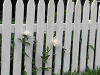
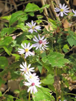

We have solutions that are affordable for any household.
 |
Culligan's H.E. Water ConditionerOne of our popular products is our high-efficiency water softener. Nothing on the market matches Culligan's intelligent design of our H. E. Series Conditioner. Intelligent enough to let you customize your water's softness and reduces operating cost up to 46% with patented technologies to optimize salt, water and electricity consumption. |
|---|---|
|
|
| Aqua Clear Drinking Water System now "wireless" |  |
| **Wireless System does not use faucet as pictured below. The wireless system will convert filtered water to customers sink faucet. | |
Aqua Clear Drinking Water System Our "wireless" drinking water system is the industries most advance product. Regular tap water may contains impurities. Culligan's system has a 4 filter process that includes a Reverse Osmosis membrane |
|
Click Here for Products for the Office
Save $$$ when purchased as a Combo! |
|
Stage 1: Culligan Water Softener |
Stage 2: Culligan Drinking Water System |
Copyright 2013, Culligan Water Conditioning of Danville. | PO Box 244, Danville, Kentucky 40423-0244
859-236-4965 | 800-892-6414 (within Kentucky) | Fax 859-236-4965
Site Updated November 10, 2013 | Page last updated November 5, 2018

Peonies in Springtime, Perryville, Kentucky |


|
|



Wildflowers in Boyle County, Kentucky |
Culligan of Danville Kentucky, located in Central Kentucky, 30 miles southwest of Lexington, furnishes water softeners, reverse osmosis systems drinking water systems, automatic filters, sulfur filters, ultraviolet disinfection units, spare parts and equipment service for the Central Kentucky counties of Boyle, Mercer, Casey, Madison, Pulaski, Lincoln and Garrard, as well as for counties not services by a Culligan dealer. Culligan Danville Kentucky also furnishes Point of Use or Bottle-Less water coolers for home and office.